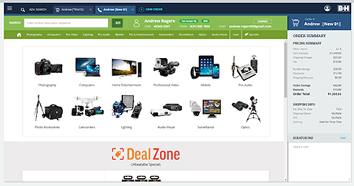
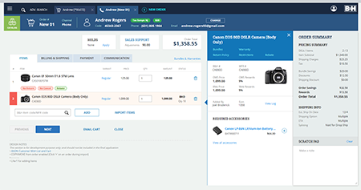
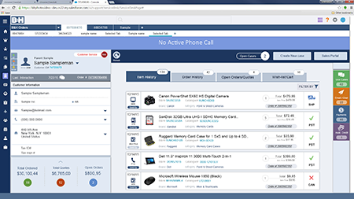
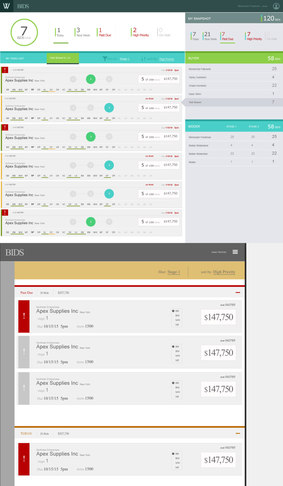
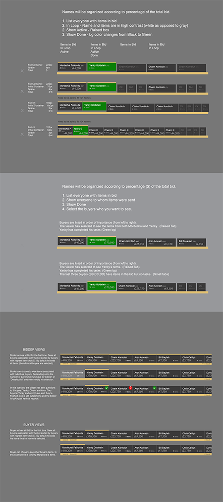
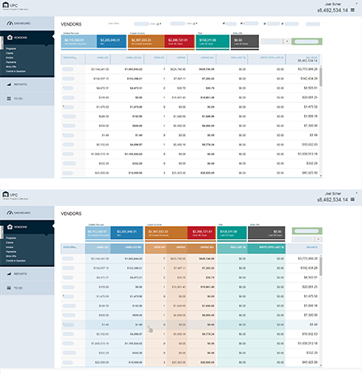
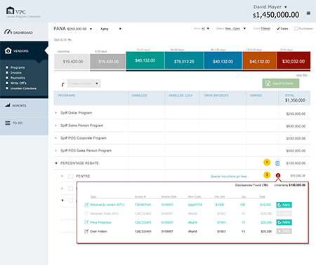

Show the small set of buyers most likely to matter for the current task.
Featured case · B&H enterprise systems
Modernizing expert tools without losing expert speed.
The challenge was not to make dense operational systems look simpler. It was to make them easier to learn and navigate while preserving the information, speed, exceptions, and cross-system connections that experienced employees depended on.
The transition
A new interface could not become a slower system.
The existing order-management system was menu-driven and highly efficient for experts, but difficult for new employees accustomed to graphical interfaces. Replacing it meant carrying forward the value hidden inside that density.
Requirements documents and high-level sketches established the business problem. Functional flows, wireframes, and working HTML/JavaScript prototypes then made complex behaviors visible enough to test, refine, and approve.
Roles and permissionsBusiness rulesOperational exceptionsProgressive disclosureInteractive prototypes
01 · Order management
Order work and product knowledge had to stay connected.
Store and phone sales, customer service, and cashier roles shared the OMS, but did not perform the same job. A core requirement was letting employees move quickly between the order they were handling and the product information needed to help the customer.
Modernization meant preserving working knowledge.
The legacy interface encoded years of operational adaptation. The design problem was therefore not a cosmetic conversion from menus to screens; it was deciding what needed to remain immediately visible, what could be grouped, and what could be revealed when needed.
01Support distinct workflows for sales, service, and cashier roles.
02Keep current and previous order information readily available.
03Bridge “order view” and “website view” without breaking the customer conversation.
04Connect OMS activity with customer-service information in Salesforce.



The interface had to reduce the learning curve—not reduce the work the system could support.
That distinction anchors the case: clarity came from organization, hierarchy, and interaction—not by removing the information expert employees needed.
02 · Salesforce
A customer view assembled from several systems.
B&H replaced Salesforce’s rudimentary 2016 out-of-the-box screens with a role-sensitive workspace connecting orders, interaction history, customer 360 information, Fullstory, and the order-management system.
The page was an integration point.
Permissioned users could see the current order, drill into order detail, review earlier customer interactions, and access analytical information without treating each source as an unrelated destination.
Current orderImmediate context for the active customer interaction.
HistoryPrior customer-service contacts and outcomes.
Customer 360Broader customer information controlled by role and permission.
AnalysisFlags, dashboards, and drill-down views for authorized users.
03 · Progressive disclosure
Twenty possible buyers. Four to six that usually mattered.
Managers and buyers needed to see everyone associated with a SKU, identify the people most relevant to the current issue, track unanswered questions, and notice important flags—even when the information could not all fit on the first screen.


Make unanswered questions and critical hidden information visible before the user expands anything.
Reveal the larger relationship set progressively instead of forcing every name into the first view.
04 · Analysis and exceptions
The uncommon cases were part of the system.
Operational applications do not end when the common path works. Dashboards helped users scan status and inventory; discrepancy tools surfaced the records automation could not settle and gave people a structured way to investigate them.


Evidence boundary: portions of the dashboard and project data are intentionally redacted. The case uses only the public-safe screens that survive in the existing portfolio.
What the work left behind
Artifacts that preserve operational reasoning.
The strongest evidence is not a single polished screen. It is the path from requirements and alternatives to an interface that makes complicated work navigable.
Problem definitionFunctional requirementsBusiness rulesRolesPermissionsExceptions
Interaction reasoningHigh-level sketchesFunctional flowsWireframesAlternative designs
Production detailHTML prototypesJavaScript behaviorInteraction modelsApproved interfaces
Enterprise patternsRole-based viewsCross-system contextProgressive disclosureDashboardsDiscrepancy handling
Case scope
This featured case focuses on B&H enterprise UX from 2014–2019, where the surviving visual evidence is strongest. The later Customer Insights and Medallia work remains prominent elsewhere in the portfolio as a separate capability story.
Enterprise UXCurrent CX shown separately
Next: the later B&H Customer Insights and CX work, where research, surveys, and operational response became a connected capability.